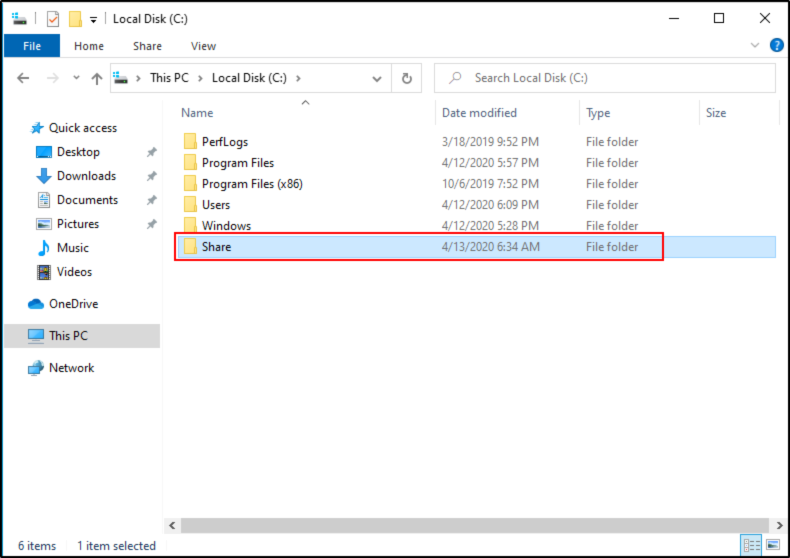
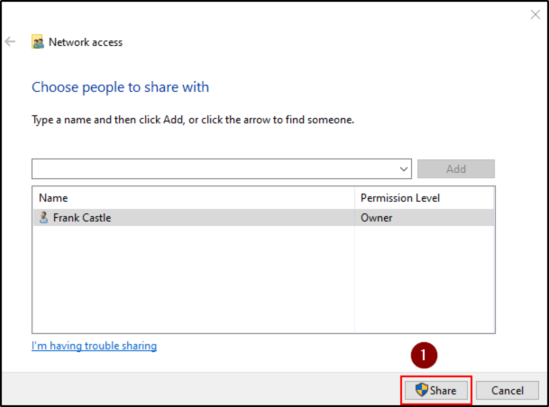
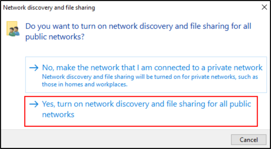

Joining Our Machines to the Domain
DISCLAIMER: ALL WE SEE HERE HAS TO BE DONE FOR BOTH THE MACHINE
Go into the root folder (trough the Local Disk) and create a Folder called Share

Right click on the folder an go to the:
Properties - Sharing, Share


We will share the folder:




###############################################################
Now, into our Domain Controller (Windows Server):
Obtain your IP Address


###############################################################
Back to our Windows Machine (Windows 10 Enterprise) :
We will set up our Domain Controller as a DNS Server for those 2 machines
Open “Network and Internet Settings” or "Network Status" and go for “Change Adapter Options”


Now, search for Domain into the search bar and go for “Access work or school”


Click the “Connect” button and a box should appear:
Click on “Join this device to a local Active Directory domain”


At the end, Restart Now.
Now we wil login as a Frank Castle user (from the Domain Controller)
Just to check if it is successful


It is successful, but now switch out to Administrator account:


We will enable Frank Castle to be a Local Administrator on this machine.
We will enable Frank Castle to be a Local Administrator of Peter Parker machine too:
There are 2 kind of special attack we can do when someone is a Local Admin of more machines.
We can search for “Computer Management”:


We are searching for the Administrators Group, located in:
Computer Management - Local Users and Groups - Groups - Administrators
We are going to add some users


Now go to the other machine SPIDERMAN and set Peter Parker and Frank Castle as Local Administrators